Galleries
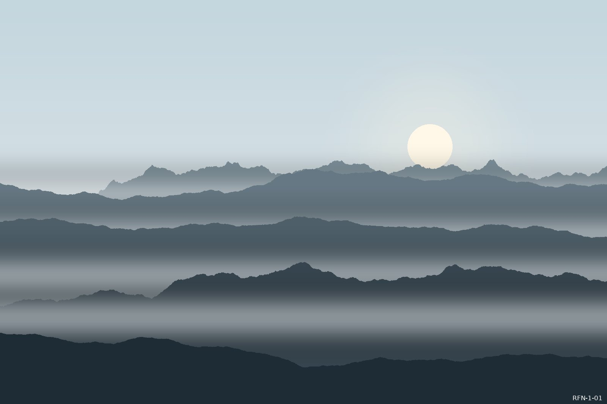
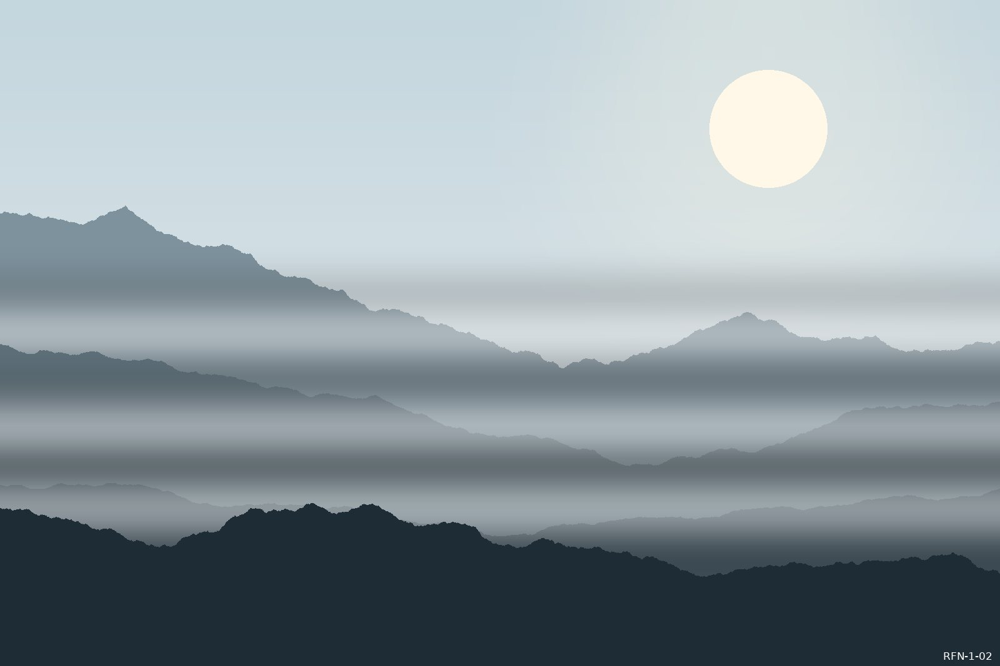

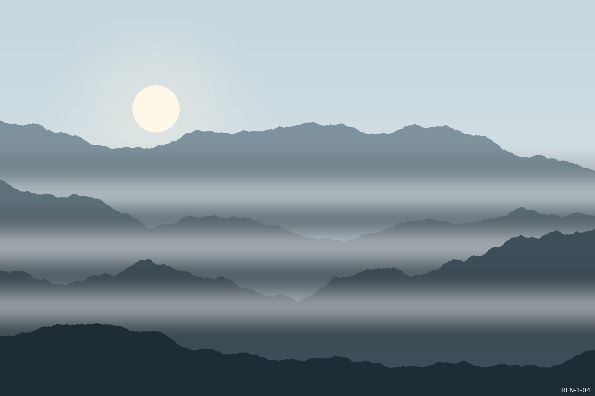
Coastal fog
Headlands and sea stacks disappearing into morning fog. 8 photographs.
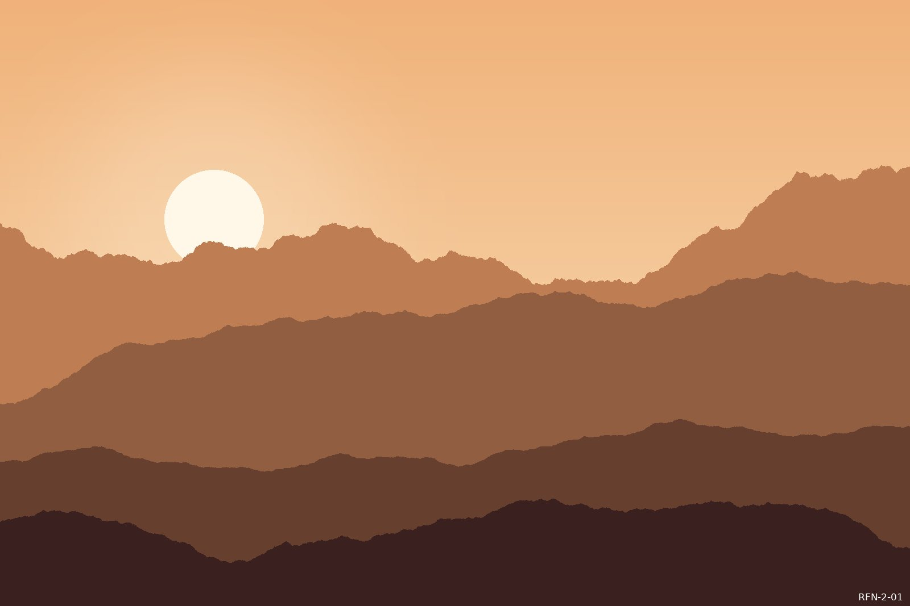
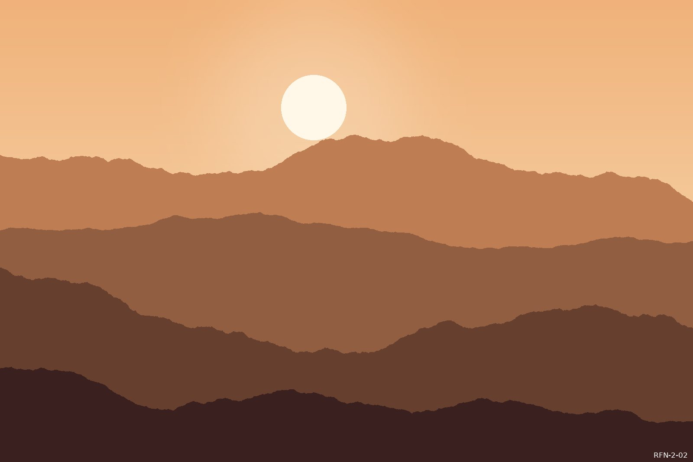
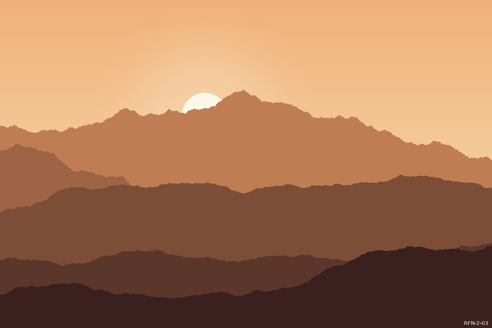
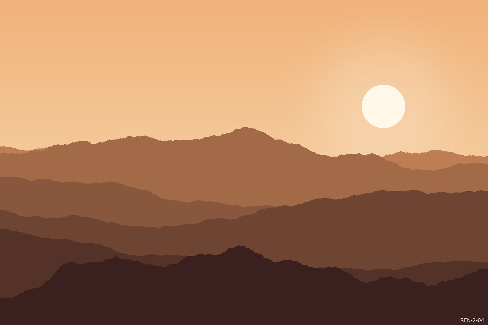
High desert
Mesas, dry washes and long shadows at the edge of the day. 8 photographs.

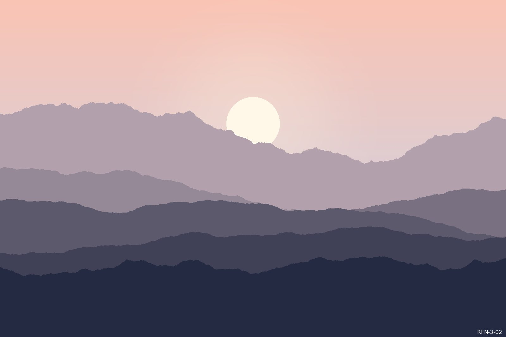

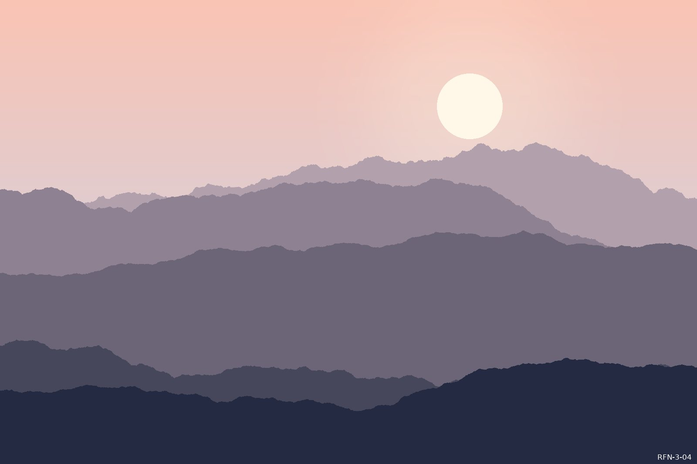
Alpine dawn
First light on granite and snowfields above the tree line. 8 photographs.
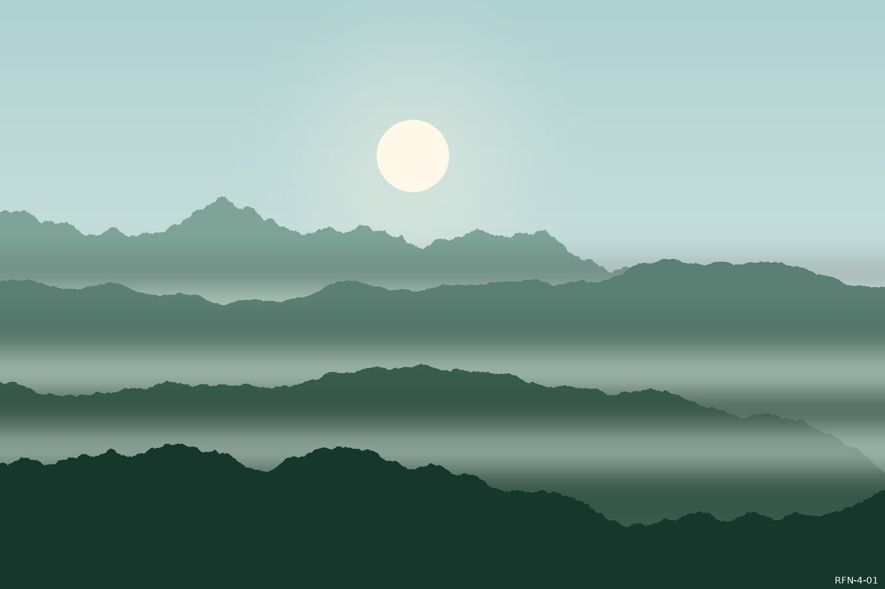


River valleys
Braided rivers, gravel bars and green valley floors. 8 photographs.

Night ridges
Ridgelines under moonlight and the last blue of dusk. 8 photographs.
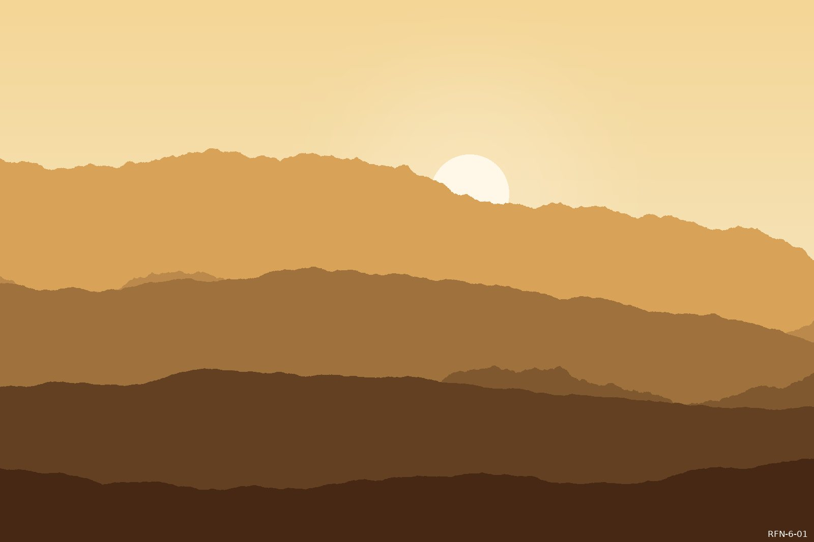
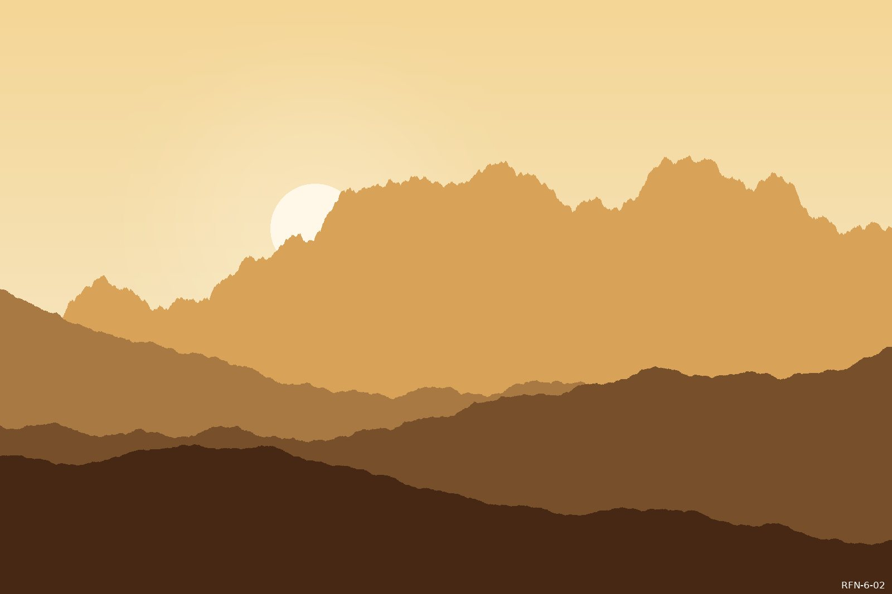

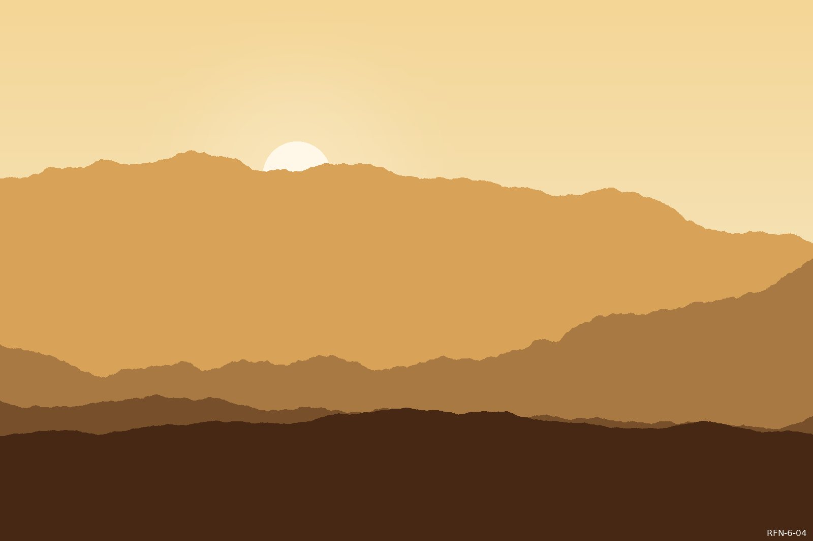
Autumn passes
Larch and aspen turning gold on the high passes. 8 photographs.